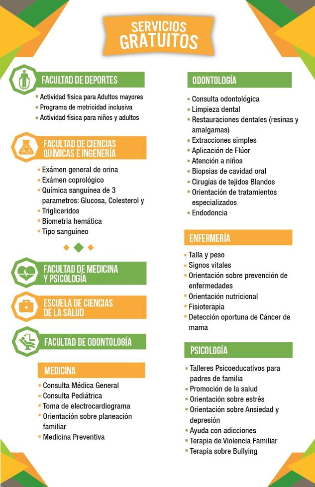

Campus:
Mexicali
|
Ensenada
Inicio
Bienvenida
Bienvenida
Reseña Histórica
Misión
Visión
Organigrama
Domicilio
Vicerrectoría
Cooperación Internacional e Intercambio Académico
Servicios Estudiantiles y Gestión Escolar
Posgrado e Investigación
Formación Básica
Formación Profesional y Vinculación Universitaria
Planeación e Imagen Institucional
Información Académica
Recursos Humanos
Servicios Administrativos
Unidades Académicas
Facultades
Ciencias Químicas e Ingeniería
Medicina y Psicología
Odontología
Deportes
Contaduría y Administración
Economía y Relaciones Internacionales
Derecho
Turismo y Mercadotecnia
Humanidades y Ciencias Sociales
Artes
Idiomas Tijuana
Idiomas Tecate
Ingeniería y Negocios
Institutos
Investigaciones Históricas
Escuelas
Ingeniería y Tecnología
Ciencias de la Salud
Servicios a Estudiantes
Becas
Intercambio estudiantil
Servicio social
Prácticas profesionales
Titulación
Egresados
Tutorías
Orientación psicopedagógica
Idiomas extranjeros
Cursos culturales
Actividades deportivas
Atención médica
Tribunal universitario
Centro de educación abierta
Biblioteca
Servicios a la Comunidad
Salud bucal
Servicios médicos
Atención psicológica
Programa higiene escolar
Atención a niños disléxicos
Idiomas extranjeros
Cursos culturales
Actividades deportivas
Contacto
Noticias
{{noticia.titulo}}
×
{{noticia.titulo}}
{{noticia.fecha}}
{{noticia.contenido}}
